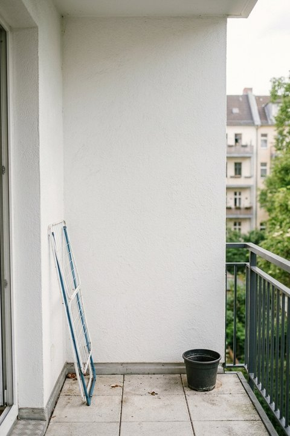
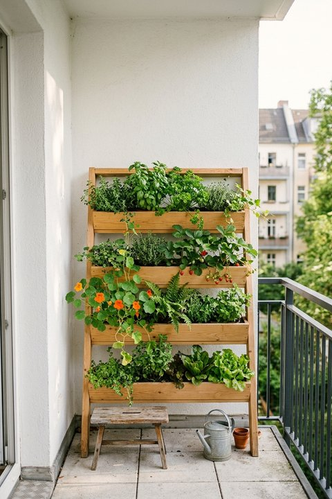

Vertikaler Garten auf dem Balkon: vorher/nachher


Die Seitenwand ist auf vielen Balkonen die größte ungenutzte Fläche. Mit einem freistehenden Pflanzregal wird sie zum Kräuter- und Naschgarten – ohne ein einziges Bohrloch und auf weniger als 40 cm Bodenfläche.
Zur Einkaufsliste & den Kosten ↓
So geht's in 5 Schritten
1. Ein freistehendes Pflanzregal
Ein Holzregal mit vier schrägen Pflanzkästen, an die Wand gelehnt. Mit einem Spanngurt am Geländer sichern, damit es bei Wind nicht kippt.
ca. 40–90 €
2. Oben Sonne, unten Schatten
Die oberen Etagen bekommen am meisten Sonne und trocknen schneller: dort Thymian, Basilikum und Erdbeeren. Unten, im Schatten der oberen Kästen: Salat, Petersilie und kleine Farne.
3. Gute Erde
Kräuter- oder Gemüseerde mit Langzeitdünger. In den kleinen Kästen ist wenig Erde – darum lieber hochwertige Erde nehmen.
ca. 8–14 €
4. Bepflanzen
Erdbeeren ab April, Basilikum und Kapuzinerkresse erst nach den Eisheiligen (Mitte Mai). Kapuzinerkresse hängt über den Rand und blüht orange – Blüten und Blätter sind essbar.
ca. 30–60 € für alle Pflanzen
5. Gießen
Im Sommer täglich, am besten morgens. Wer oft weg ist, legt einen Tropfschlauch mit Wassertank an.
Einkaufsliste
| Was | Menge | ca. Preis |
|---|---|---|
| Pflanzregal Holz, 4 Etagen | 1 | 40–90 € |
| Kräuter-/Gemüseerde, 20 l | 2 | 8–14 € |
| Kräuter (Basilikum, Petersilie, Thymian) | 6 | 12–24 € |
| Erdbeerpflanzen | 3 | 6–12 € |
| Kapuzinerkresse, Farne, Salat | 6 | 12–24 € |
| Spanngurt + kleine Gießkanne | 1+1 | 8–15 € |
Richtwerte für Deutschland, Stand November 2026. Die Preise schwanken je nach Händler und Saison.
Was kostet der vertikale Garten?
Komplett wie auf dem Bild – ca. 85–180 €.
Günstiger: Pflanzen selbst aus Samen ziehen (ab März auf der Fensterbank) spart rund die Hälfte der Pflanzenkosten.
Tipp: Jetzt im Winter planen und das Regal kaufen, im April und Mai bepflanzen.
Häufige Fragen
Funktioniert das auch auf einem Nordbalkon?
Mit Salat, Petersilie, Schnittlauch, Minze und Farnen ja. Erdbeeren und Basilikum brauchen mindestens 4–5 Stunden Sonne.
Was mache ich im Winter damit?
Das Regal kann draußen bleiben. Thymian und Schnittlauch überwintern meist, der Rest wird im Frühjahr neu gepflanzt. Mehr zu Kräutern: Kräutergarten auf dem Balkon.